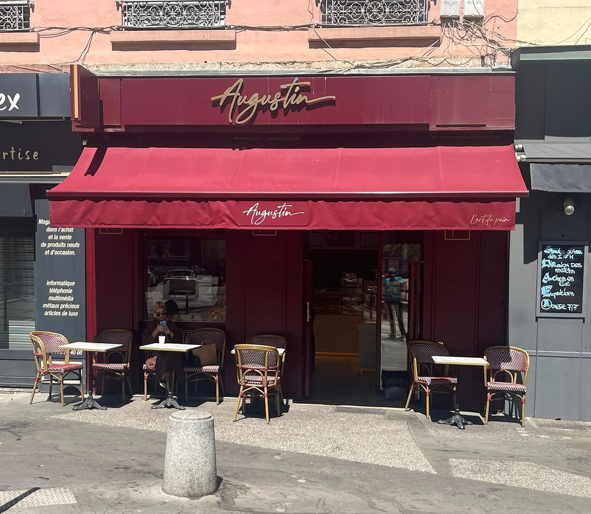
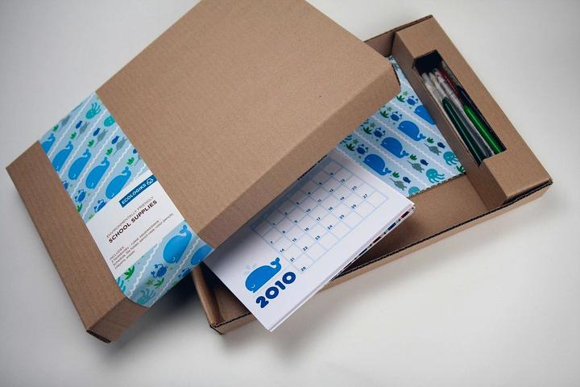
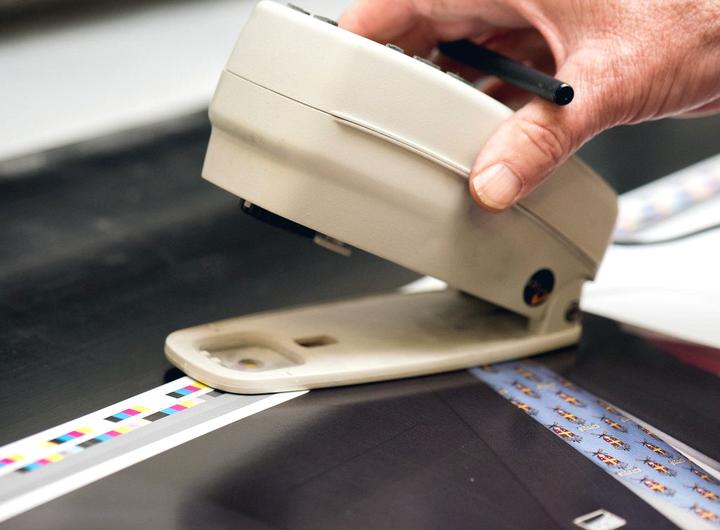
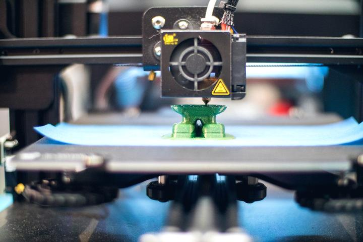
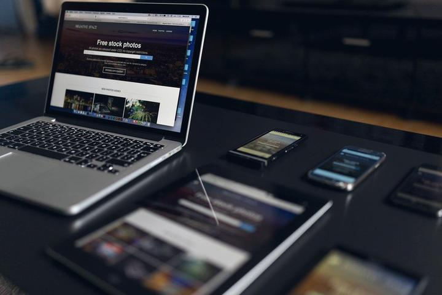
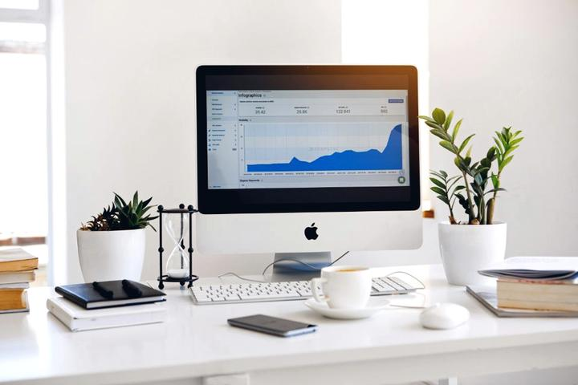
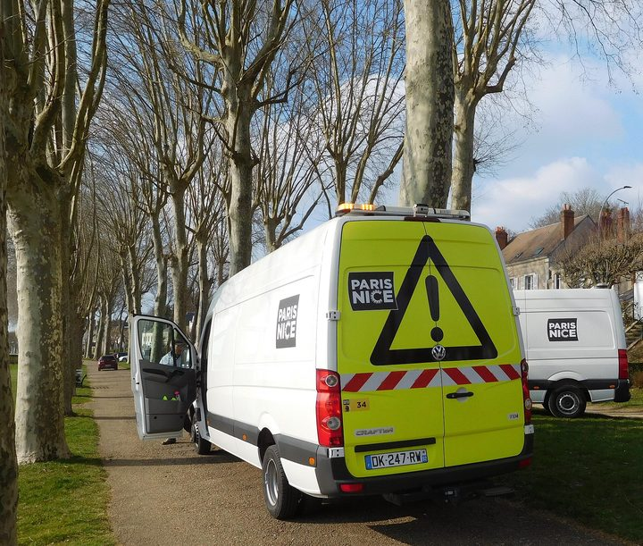
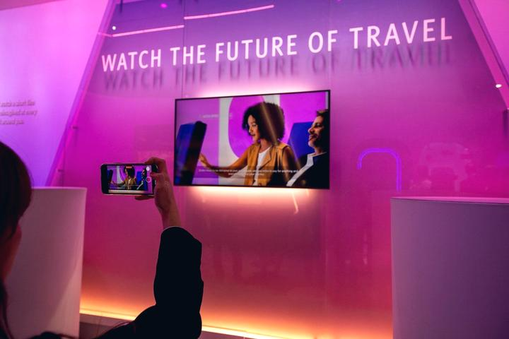
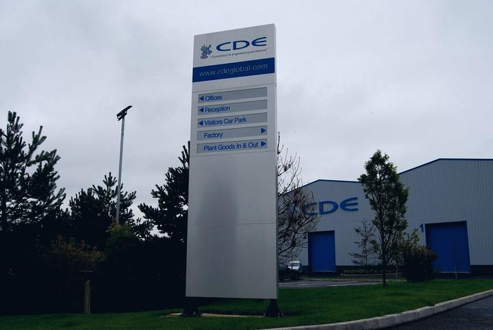

Vous voulez rendre votre entreprise visible ? Nous trouvons les bons professionnels
Un seul interlocuteur pour toute votre communication, de l'enseigne au site internet, partout en France. Commerce, entreprise, artisan, profession libérale, restaurant, industrie ou collectivité : décrivez votre projet en deux minutes. Nous le qualifions, puis nous le confions à des enseignistes, imprimeurs et poseurs sélectionnés près de chez vous. Vous recevez des propositions comparables sous 48 heures, gratuitement et sans engagement.
Un service pour les entreprises qui veulent se faire connaître
Notre métier est de vous rendre visible : sur votre façade, sur vos véhicules, dans vos locaux, sur vos supports imprimés et vos objets publicitaires. Si vous êtes vous-même un professionnel de la communication visuelle et que vous cherchez du travail, rendez-vous dans l'espace professionnels — c'est une rubrique à part.
Commerces et points de vente
Boulangerie, boutique, pharmacie, coiffure, opticien : devanture, enseigne lumineuse, vitrophanie.
Entreprises et PME
Signalétique de locaux, totem d'entrée, habillage de flotte, salons et événements.
Artisans et indépendants
Marquage de véhicule, panneau de chantier, enseigne, cartes et supports imprimés.
Restaurants, bars et hôtels
Enseigne, menu extérieur, terrasse, signalétique intérieure et directionnelle.
Santé et professions libérales
Plaque professionnelle, croix de pharmacie, signalétique de cabinet et d'accueil.
Industrie et logistique
Signalétique de sécurité, marquage au sol, identification de zones et de quais.
Franchises et réseaux
Déploiement multi-sites cohérent, charte technique, coordination des poses.
Collectivités et institutions
Marchés publics, jalonnement, accessibilité, patrimoine — offre dédiée.
25 ans de métier dans la communication visuelle
Le réseau n'est pas piloté par un informaticien qui a repéré un marché, mais par un professionnel de la communication visuelle qui l'exerce depuis vingt-cinq ans. C'est ce qui permet de qualifier un projet en dix minutes au téléphone, de traduire « je voudrais quelque chose de visible » en cahier des charges technique, et de repérer immédiatement un devis auquel il manque la moitié des postes.
- Un besoin qualifié par téléphone en dix minutes, pas par formulaire automatique
- Un cahier des charges technique rédigé pour vous : matériaux, dimensions, éclairage, fixations
- La lecture critique des devis reçus, poste par poste
- La connaissance des règlements locaux de publicité et des démarches en mairie
Toute la communication visuelle, d'un seul point d'entrée
De la première maquette à la pose en nacelle, 13 familles de métiers couvrent l'intégralité de vos besoins de visibilité — enseigne, impression, covering, découpe, impression 3D, imprimerie, web et référencement. Un seul interlocuteur, des spécialistes pour chaque étape.
 Enseignes
EnseignesEnseignes & enseignes lumineuses
Lettres relief, caisson lumineux, néon LED, drapeau, totem.
Découvrir Signalétique
SignalétiqueSignalétique intérieure & extérieure
Directionnelle, PMR, sécurité, plaques, totems d'orientation.
Découvrir Covering véhicule
Covering véhiculeCovering & marquage véhicule
Total covering, semi-covering, lettrage, flotte, déco.
Découvrir Impression
ImpressionImpression numérique grand format
Bâche, banderole, roll-up, panneau, adhésif, kakémono.
Découvrir
Objets publicitairesObjets publicitaires & textile
Goodies, textile floqué, EPI marqués, cadeaux d'affaires.
Découvrir Maquette & création
Maquette & créationMaquette & création graphique
Logo, charte, simulation façade, BAT, fichiers de production.
Découvrir Pose & nacelle
Pose & nacellePose, nacelle & maintenance
Travail en hauteur, dépose, raccordement, SAV, entretien.
Découvrir Vitrophanie & PLV
Vitrophanie & PLVVitrophanie, PLV & stands
Vitrine, dépoli, PLV magasin, stands et salons.
Découvrir Découpe laser & CNC
Découpe laser & CNCDécoupe laser & CNC
Découpe laser, fraisage numérique, gravure, usinage sur mesure.
Découvrir
ImprimerieImprimerie
Cartes, flyers, brochures, papeterie, catalogues, façonnage.
Découvrir
Impression 3DImpression 3D
Prototypage, pièces techniques, lettres volumiques, maquettes.
Découvrir
Site internetCréation de site internet
Site vitrine, e-commerce, refonte, hébergement, maintenance.
Découvrir
RéférencementRéférencement naturel
SEO local, technique, contenu, fiche Google, campagnes.
DécouvrirTrois étapes, aucune perte de temps
Consulter trois entreprises soi-même prend en moyenne une dizaine d'heures et aboutit à des devis incomparables. Nous faisons ce travail pour vous, avec un cahier des charges unique.
Vous décrivez votre projet
Un formulaire de deux minutes, ou un appel. Nature du besoin, ville, contraintes de façade, délai souhaité, ordre de budget. Aucun jargon requis : nous traduisons.
Nous qualifions et transmettons
Nous rédigeons un cahier des charges technique — matériaux, dimensions, mode d'éclairage, contraintes réglementaires — et le confions aux professionnels dont les capacités correspondent réellement à votre projet.
Vous comparez et choisissez
Deux à trois propositions établies sur la même base arrivent sous 48 heures. Vous traitez ensuite en direct avec l'entreprise retenue, sans intermédiaire dans le contrat.


Un réseau ouvert, sans atelier à remplir
Un réseau franchisé a un point de vente à alimenter : il vous oriente vers le sien, avec son catalogue et ses fournisseurs référencés. Nous ne possédons aucun atelier et ne sommes liés à aucune enseigne — nous partons donc de votre projet, puis nous cherchons l'outil de production qui lui correspond, où qu'il se trouve.
Le bon atelier, pas le seul disponible
Une enseigne lumineuse sur mesure, un covering de flotte et un plan de signalétique d'hôpital ne se fabriquent pas dans le même atelier. Nous orientons vers l'outil de production adapté — sans exclure personne par principe, y compris une agence de réseau quand c'est elle qui l'a.
Des devis réellement comparables
Même cahier des charges, mêmes matériaux demandés, mêmes prestations incluses. C'est la seule façon de savoir si un écart de prix cache un écart de qualité.
Des professionnels vérifiés
Assurance décennale et responsabilité civile professionnelle à jour, CACES nacelle, habilitation électrique, capacités de production déclarées et contrôlées.
Des artisans de proximité
Un poseur à 30 km intervient plus vite et moins cher qu'un prestataire national. Pour le SAV d'une enseigne lumineuse, cette proximité change tout.
Le volet administratif pris en charge
Autorisation préalable d'enseigne, dossier Cerfa, insertion photographique, déclaration TLPE, occupation du domaine public : c'est prévu dès le devis, pas découvert en cours de route.
Gratuit, sans exclusivité
Côté client, vous ne payez rien et ne signez rien avec nous : notre revenu vient de l'abonnement des professionnels, pas de votre chantier.
Fabriqué près de votre site, pas expédié d'un entrepôt à 800 kilomètres
En communication visuelle, le produit est encombrant, fragile et souvent hors-gabarit. Le faire voyager coûte cher, allonge les délais et ajoute un risque de casse. Le réseau est construit pour l'éviter : l'atelier qui fabrique est celui qui pose, et il est à moins d'une heure de votre façade.
Un poste de transport qui disparaît
Sur une enseigne fabriquée à 700 kilomètres, la livraison peut représenter 5 à 15 % du budget du support. Fabriquée sur place, elle représente zéro. Ce n'est pas une remise commerciale, c'est un coût qui n'existe plus.
Des délais qui ne dépendent plus d'un camion
Une palette hors-gabarit part en messagerie spécialisée : deux à six jours ouvrés, une date de livraison rarement garantie, et un créneau à tenir sur le chantier. En circuit court, le produit sort de l'atelier le matin et il est posé l'après-midi.
Plus de casse en transit, plus de litige
Le plexiglas thermoformé, le PVC expansé grand format et les faces tendues supportent mal la manutention répétée. Une casse en messagerie, c'est une refabrication complète, un chantier reporté et une expertise à mener entre trois intervenants. Un produit qui ne voyage pas ne casse pas.
Un service après-vente qui tient dans la journée
Un transformateur LED qui lâche au bout de dix-huit mois se remplace en deux heures quand le fabricant est à trente kilomètres. Quand il est à l'autre bout de la France, il faut démonter, expédier, attendre, réexpédier, reposer — et votre enseigne reste éteinte pendant trois semaines.
Ce que coûte le transport que vous ne payez pas
| Support | Contrainte de transport | Expédition depuis un atelier unique | Fabriqué sur place |
|---|---|---|---|
| Caisson lumineux simple face 2 m | Palette longue, hors-gabarit | 150 – 400 € | 0 € |
| Totem lumineux double face 3 m | Transport spécifique, hayon | 350 – 900 € | 0 € |
| Jeu de lettres relief rétro-éclairées | Calage sur mesure, fragile | 80 – 250 € | 0 € |
| Bâche ou panneau grand format 6 × 3 m | Rouleau long | 60 – 180 € | 0 € |
| Habillage complet de devanture | Deux palettes minimum | 250 – 600 € | 0 € |
| Signalétique intérieure d'un établissement | Colis multiples, plusieurs envois | 120 – 350 € | 0 € |
Fourchettes indicatives du marché de la messagerie hors-gabarit, hors assurance sur valeur déclarée. Elles varient fortement selon la distance, le volume, la nécessité d'un hayon et le respect d'un créneau de livraison — c'est précisément cette imprévisibilité qui les rend difficiles à budgéter à l'avance.
Sur un déploiement multi-sites, le transport est le seul poste qui ne baisse jamais
Un réseau qui équipe quarante points de vente négocie ses matériaux, ses faces et sa main-d'œuvre au volume. Le transport, lui, se paie quarante fois : chaque site est une expédition distincte, vers une adresse distincte, avec sa propre contrainte de livraison. À 200 € l'envoi moyen, cela fait 8 000 € qui ne financent aucune enseigne. Réparti sur des ateliers de proximité, ce poste tombe à zéro et l'économie revient dans le produit ou dans le prix.
- Un seul cahier des charges technique, écrit une fois, appliqué à l'identique partout
- Mêmes matériaux, mêmes références de faces, mêmes teintes contrôlées site par site
- Un interlocuteur unique côté réseau — vous ne pilotez pas quarante ateliers
- Les poses coordonnées par région, sans camion à faire traverser la France
Quand la fabrication centralisée reste le bon choix
La proximité ne gagne pas sur tout, et prétendre le contraire serait malhonnête. Dès que la pièce est petite, identique en grande série et transportable en colis ordinaire, une production unique reste plus économique : les réglages machine s'amortissent sur la quantité et l'expédition coûte quelques euros. Nous arbitrons projet par projet, et nous le disons quand la centralisation est la bonne réponse.
- Plaques professionnelles, numéros, étiquettes gravéesProduction centralisée — série longue, colis léger
- Adhésifs, vitrophanie découpée, lettrages simplesProduction centralisée — envoi à plat, pose locale
- Objets publicitaires, textiles floqués ou brodésProduction centralisée — série et sourcing
- Enseignes lumineuses, caissons, totems, lettres reliefFabrication locale — volume et fragilité
- Covering et marquage de véhiculesFabrication locale — le véhicule vient à l'atelier
- Signalétique de chantier et grands formats rigidesFabrication locale — encombrement
De Perpignan à toute la France
Le réseau s'est constitué à Perpignan et dans les Pyrénées-Orientales, où nous connaissons les contraintes de terrain : secteur patrimonial, tramontane, atmosphère saline, règlement local de publicité. Il couvre aujourd'hui 100 départements et 436 villes — les 96 départements métropolitains, préfectures comprises, et l'outre-mer — avec la même exigence de proximité.
- Un interlocuteur unique, où que soit votre point de vente
- Une page dédiée pour chaque préfecture et chaque grande ville de France métropolitaine
- Des ateliers locaux pour la fabrication, la pose et le service après-vente
- Le déploiement multi-sites d'une même charte, à l'identique
- La connaissance des règlements locaux de publicité, commune par commune
Ce que le réseau produit au quotidien
Enseignes lumineuses, habillages de vitrine, marquage de flotte, signalétique d'établissement, stands et objets publicitaires : un aperçu des familles de projets traités.






Ce que l'on nous demande le plus souvent
Le service est-il vraiment gratuit pour le client ?
Oui, totalement. Vous ne payez rien pour être mis en relation ni pour recevoir des devis, et aucune commission n'est ajoutée au prix de l'entreprise retenue. Notre rémunération vient des professionnels du réseau, sous forme d'un abonnement fixe. Vous restez libre de ne donner suite à aucune proposition.
Combien de devis vais-je recevoir ?
En général deux à trois propositions, établies sur le même cahier des charges pour être réellement comparables. Nous préférons trois devis sérieux à dix devis approximatifs : au-delà, le tri devient un travail à part entière et les professionnels se désengagent.
Qui réalise réellement les travaux ?
Des entreprises indépendantes de votre région : enseignistes fabricants, imprimeurs grand format, poseurs habilités au travail en hauteur, graphistes et spécialistes de l'objet publicitaire. Nous vérifions leurs assurances, leurs qualifications et leurs capacités de production avant tout référencement.
Intervenez-vous partout en France ?
Oui, en métropole comme en outre-mer. Le réseau s'est constitué depuis Perpignan et les Pyrénées-Orientales, puis s'est étendu aux grandes agglomérations. Lorsqu'une zone est encore peu couverte, nous sollicitons directement des professionnels locaux pour votre projet.
En quoi est-ce différent d'une franchise d'enseignes ?
Une franchise a un point de vente à remplir : elle vous oriente vers son propre atelier, son catalogue et ses fournisseurs référencés, parce que c'est son modèle. Nous n'avons aucun atelier à remplir et nous ne sommes liés à aucun réseau. Nous partons donc du projet et nous cherchons l'outil de production qui lui correspond — atelier indépendant le plus souvent, agence franchisée parfois, quand c'est elle qui a la bonne machine et la bonne disponibilité. La différence n'est pas de savoir qui fabrique, mais de savoir si celui qui vous oriente a un intérêt à vous orienter là.
Que se passe-t-il après ma demande ?
Nous vous rappelons pour préciser le besoin — dimensions, contraintes de façade, délais, budget. Nous rédigeons ensuite un cahier des charges clair et le transmettons aux professionnels adaptés. Vous recevez leurs propositions directement, et vous traitez ensuite en direct avec celui que vous choisissez.
Vous avez un projet de communication visuelle ?
Commerce, entreprise, artisan, profession libérale, collectivité : décrivez votre projet en 2 minutes. Nous le qualifions et le confions à des professionnels sélectionnés près de chez vous. Vous recevez des propositions comparables sous 48 heures, gratuitement et sans engagement.
Demander mon devis gratuit